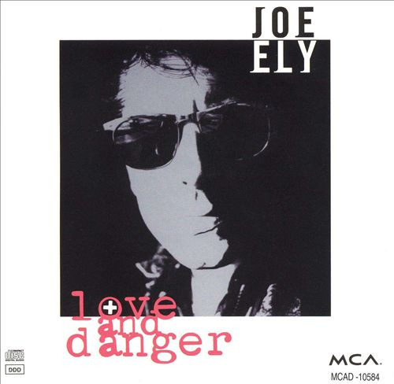

Whenever Kindness Fails
18 Nov 2022 · 7 min read
topics: connectionsociety

I’ve been thinking a lot lately about this song by Robert Earl Keen, first recorded by Joe Ely for his Love and Danger album, released in 1992.
It is – be advised – a difficult song, in that the narrator talks about shooting and killing people, and tries to justify his actions.
So before I start sharing my thoughts, perhaps it is best to issue a clarification that no one here is advocating for any kind of gun violence. Heck, I don’t even own a gun.
But it is a great song.
I consider both Joe Ely’s version and the later recording by the songwriter himself to be excellent renditions, so feel free to listen to either, or both.
And now, let’s dive into the words.
I crossed the desert in a dining car,
In the spring of ninety-one.
I met some people drinking at the bar,
They were laughing, having fun.
I told 'em that I hadn’t heard the joke
That was so hilarious.
They said that I was just a dumb cowpoke –
I didn’t want to make a fuss.So I shot 'em down,
One by one,
I left them along the rails.
I only use my gun
Whenever kindness fails.
First of all, let me note that dining cars were a normal part of long-distance trains by the mid-1880's, so for all we know at this point Keene’s narrator could be talking about an event in 1891 or 1991. So if we like, we can certainly think about the events of the song as being comfortably distant in terms of our American history – as we often do when watching a Western film.
So now let’s consider the scene that plays out. Our narrator tries to join the group at the bar and, instead of meeting with friendly acceptance, is laughed at and called unflattering names.
Let’s see, can we find any parallels in our modern society? Anything like this happening in schools across our country? Might the folks at the bar be considered elites, in some sense? Does anything like this ever play out on social media? Does it remind anyone of a certain presidential candidate referring to a considerable group of her fellow Americans as a basket of deplorables?
I think Keane might be onto something here, in terms of capturing a certain zeitgeist of our modern times, don’t you?
And then the final few lines unfold in vivid dramatic fashion:
I didn’t want to make a fuss.
This line suggests that, despite the insults, the narrator doesn’t want to argue the point, perhaps suggesting that he might simply walk away.
So I shot 'em down
This next line hits us like a gut punch, as we understand that, for this narrator, “making a fuss” would mean engaging in shouting or verbal recriminations. But shooting them, in our narrator’s world, is a simple, direct, tidy solution to the problem.
One by one,
This line suggests that he killed the group, not in some mad frenzy, but carefully and deliberately.
I left them along the rails;
This line suggests a couple of things: first the idea of moving on, from people and events, with the speed and intractable power of a locomotive; and then the picture of bodies lying in the desert sun next to the railroad tracks, in the middle of a desert – again bringing up images from a real or imagined American past, something we might visualize, again, as a scene from a film, perhaps a John Ford Western.
I only use my gun…
This penultimate line of the chorus suggests that the narrator is a man of restraint, with a strict code governing his behavior.
Whenever kindness fails.
And then this final line, coming after everything else, hits us as another surprise, suggesting that this killer’s preferred mode of interaction is kindness, and that the story we have just heard is really all about a failure to exercise this valuable human trait.
So now let’s move on to the second verse.
The moon was in the sign of Scorpio.
The sun was at my back.
I didn’t know how far the train would go,
Until the law would find my track.
I saw the brakeman and the engineer
Drinking wine and eating brie.
I asked them who would brake and who would steer,
They started pointing back at me.So I shot 'em down,
One by one,
I left 'em 'long the rails.
I only use my gun
Whenever kindness fails.
So the first four lines of the second verse paint another vivid picture, and again one that could have come from an old Western film.
But then we come up against the brakeman and the engineer “drinking wine and eating brie.”
Hold on a minute! If it weren’t clear before that Keen is talking about something happening today, in modern times, it certainly is now – no wine and brie ever appeared in a Western film!
And then these two railroad workers go on to further abdicate their responsibilities, not only hedonistically indulging in their upscale and very cosmopolitan treats, but suggesting that the narrator is now on his own to control the speed of the train.
Well, by now, we know how this encounter is likely to end, don’t we?
But what an image! In a song written just before the start of the Bill Clinton presidency, Keen presents perhaps a defining symbol of the neoliberal era, with global elites kicking back and enjoying themselves, saying it’s not their job to steer things, because we’ll all be better off if they just leave things up to the invisible hand of a global free market.
And, as in the song, we can by now see how well this plan works out.
So now let’s turn to the final verse.
I only have a moment to explain –
Just a chance to let you know.
When it’s time for you to board the train,
There are two ways you can go.
You can ride the wheels into the sun:
Feel the cool wind on your face.
Or you can laugh into a loaded gun,
and you’ll likely lose your place.Yeah, I shot 'em down,
One by one,
Then I left 'em 'long the rails.
I only use my gun
Whenever kindness fails.
This final verse is all about the significance and importance and urgency of making the right decision. The narrator only has “a moment to explain.” The decision point is approaching, and can’t be avoided: “when it’s time for you to board the train.” And then the stark difference between the two possible outcomes: the “cool wind on your face,” vs. losing your place by way of a loaded gun, and ending up left “along the rails.”
What is the message here, in this last verse?
Actions matter. They have consequences that can’t be undone. Decision points come quickly. Be prepared.
And then we end things with a final repetition of the chorus, this time with the last two lines slightly altered, emphasizing the sad finality of the consequences of a poor decision, while again making use of a common association with a train.
Yeah I shot 'em down,
One by one;
I left them along the rails.
When I use my gun,
That lonesome whistle wails.
What is this song about?
This is not a song about killing. It is a song about the importance of showing care to others, through our words and our deeds. And about the implacable consequences of failures to do so.
Why do I still appreciate this song, after thirty years and so many repeated listenings?
Well, if I do a Google search for sayings about kindness, I get a lot of nice, treacly, well-intentioned words that don’t have much of an impact on me.
Of course I could remind myself of the importance of kindness by rereading the recent book by Michael E. McCullough, titled The Kindness of Strangers: How a Selfish Ape Invented a New Moral Code.
Or I could listen once again to this four-minute gem from Robert Earl Keen, which reminds me, in no uncertain terms, that kindness is a necessary part of the social glue that binds us all together, and that humiliation and contempt and disdain have no place in human relationships, at any scale.
It’s a reminder we can’t hear too often.
Thanks for reading! If you’d like a convenient short URL to link to this piece, you can use pract.org/s/whkf.html. Or feel free to simply share this piece using one of the social media buttons below!